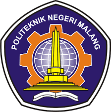

TEKNIK INFORMATIKA
Pada tahun 2018 berdasar kebutuhan masyarakat dan Industri terkait Progras Otpinea IV bidang informatika maka Polinema mendirikan program stati haru Diploms IV (DIV) Teknik Informatika (TI). Pada awal berdirinya jumlah peserta didik Progra D-IV TI hanya terdiri dari ah Mahasiswa, namun pada tahun 2015 jumlah peserta didik Prodi D-IV TI telah mengalami peningkatan menjadi 545 Mahasiswa.
Perkembangan jumlah mahasiswa yang sangat pesat halk di Program Studi D-III ME maupun 0-TV TI mendorong pimpinan di Palinesa untuk menyatukan kedua program studi tersebut dalam satu organisasi Jurusan baru terpisah dari Jurusan Teknik Elektro. dihawa Jurusan haru terpisah dari Jurusan Teknik Elektro. Dan pada tahun 2015 berdasarkan SE Direktur Nomor 53 dalas rangka peningkatan sutu pengelolaan dan optirasi susher daya dibentuklah Jurusan Teknologi Informasi (ITI) dengan prodi D-III MI dan D-IV T